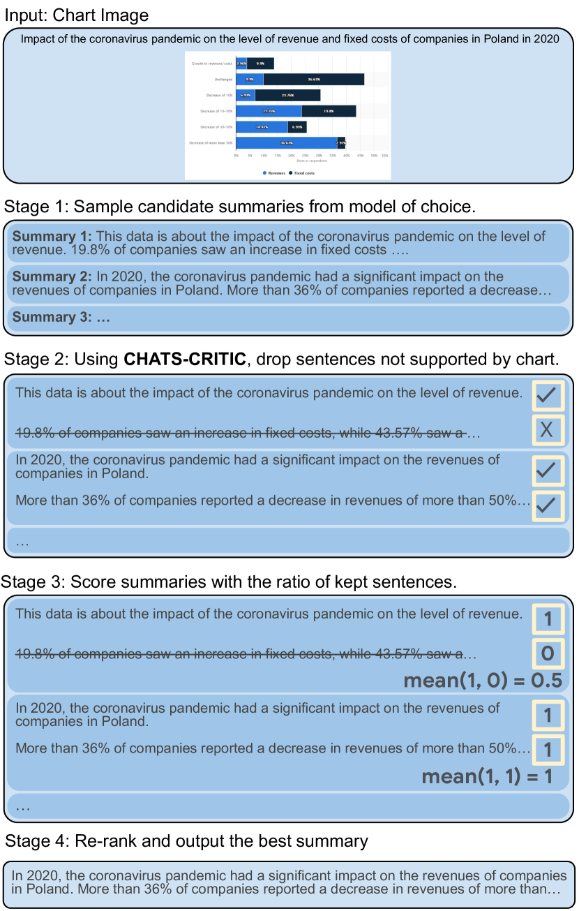
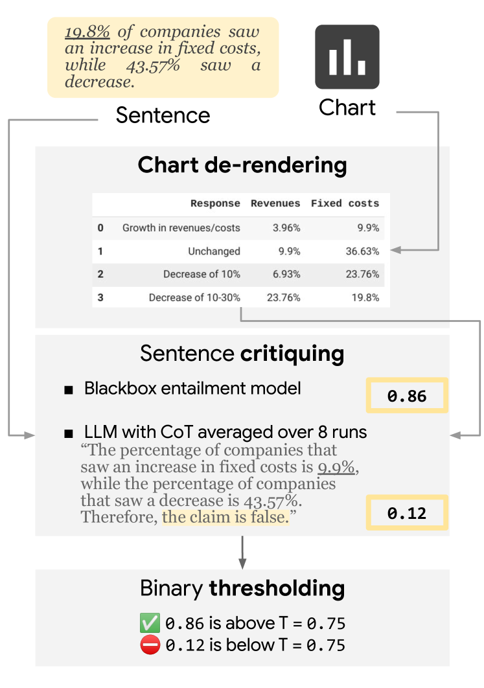
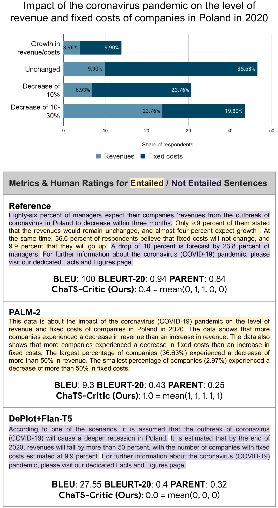
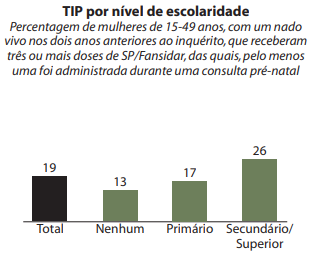
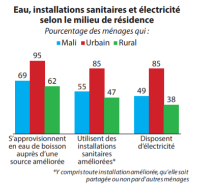
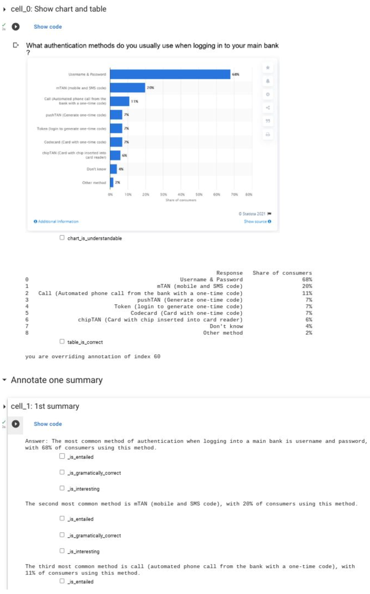
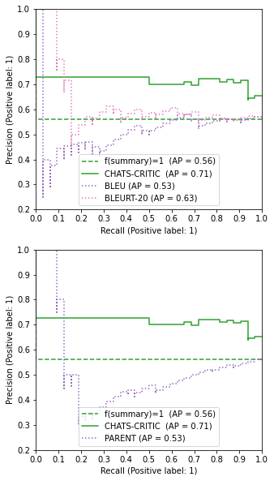
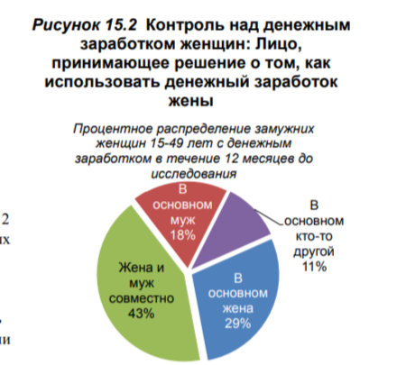
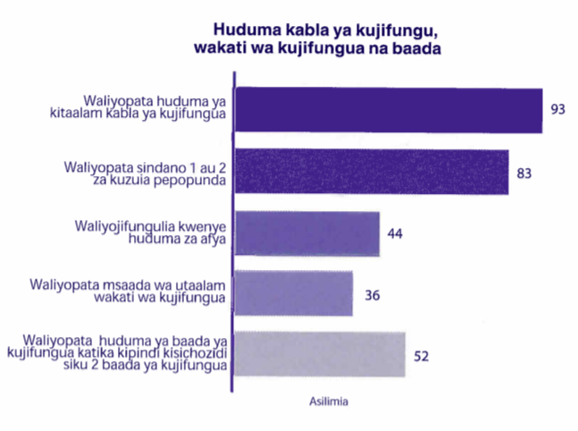

Faithful Chart Summarization with ChaTS-Pi
Abstract
Chart-to-summary generation can help explore data, communicate insights, and help the visually impaired people. Multi-modal generative models have been used to produce fluent summaries, but they can suffer from factual and perceptual errors. In this work we present ChaTS-Critic , a reference-free chart summarization metric for scoring faithfulness. ChaTS-Critic is composed of an image-to-text model to recover the table from a chart, and a tabular entailment model applied to score the summary sentence by sentence. We find that ChaTS-Critic evaluates the summary quality according to human ratings better than reference-based metrics, either learned or n-gram based, and can be further used to fix candidate summaries by removing not supported sentences. We then introduce ChaTS-Pi , a chart-to-summary pipeline that leverages ChaTS-Critic during inference to fix and rank sampled candidates from any chart-summarization model. We evaluate ChaTS-Pi and ChaTS-Critic using human raters, establishing state-of-the-art results on two popular chart-to-summary datasets.111Code and demo at hf.co/spaces/chats-pi/chats-pi.
1 Introduction
Chart summarization requires faithfully extracting quantitative data and describing them using natural language. Recent natural language generation (NLG) studies have explored different flavors of chart-to-summary generation tasks including caption generation for scientific figures Hsu et al. (2021), chart summary generation Kantharaj et al. (2022), or analytical textual descriptions for charts Zhu et al. (2021). These tasks can be advantageous for the visually impaired (Benji Andrews, 2023) as well as for automating interpreting complex domains such as finance data-analysis, news reporting, and scientific domains (Siegel et al., 2016).

While a wide range of models and techniques have been applied for chart summarization, faithfulness remains a major challenge for the task. Specifically, the models often misread details in the charts (due to perceptual mistakes) or miscalculate the aggregations (due to reasoning flaws). To overcome some of these limitations, optical character recognition (OCR) models and object detection systems are usually employed to extract meta-data such as axis, values, titles, legend Luo et al. (2021); Masry et al. (2022). These data are then used as auxiliary inputs to finetune NLG models. Nonetheless, these modeling efforts are still limited by two fundamental issues (i) training & evaluation dataset quality and (ii) the reference-based metrics being used for evaluation. As examples, two widely used datasets, Chart-to-Text Kantharaj et al. (2022) and SciCap Hsu et al. (2021), are automatically extracted from web articles and academic journals. As a result, the summary references are prone to hallucination, i.e. the reference might contain context that cannot be entailed solely by the chart content. Training on this data can encourage the NLG models to improvise/hallucinate. Besides, the auto-extracted summaries sometimes emphasize only certain aspects of the chart, missing out critical insights.
On the other hand, n-gram based metrics such as BLEU Papineni et al. (2002), or learned metrics such as BLEURT Sellam et al. (2020) rely only on gold references. They are not capable of recognizing unreferenced but correct insights since they solely rely on the reference for scoring the summaries, as shown in Figure 3. This issue is especially pronounced when the gold references are noisy, which is the case for Chart-to-Text and SciCap. Last but not least, reference-based metrics also heavily penalize summary style mismatches, giving an artificial disadvantage to LLMs which are not tuned on the task data Maynez et al. (2023).
This motivates building a reference-free critic ChaTS-Critic (Figure 2) that can be used as a metric to score and re-rank summaries. We additionally introduce ChaTS-Pi (Figure 1) that leverage ChaTS-Critic scores to generate a high quality summaries. We summarize our contributions as follows:

-
1.
We present ChaTS-Critic, a reference-free metric composed of a model that extracts the underlying table data from the chart and a table-entailment model acting on each sentence within a chart summary.
-
2.
We design ChaTS-Pi, a pipeline that (i) generates multiple candidate summaries using a generative model, either fine-tuned or with in-context learning; (ii) then leverages ChaTS-Critic to refine the summaries by dropping unsupported sentences; (iii) computes a summary score to rank the summaries by penalizing summaries with dropped sentences to increase the fluency, and (iv) outputs the best one.
-
3.
To assess the efficacy of ChaTS-Critic, we juxtapose human preferences against both ChaTS-Critic and other prevailing metrics. Our results indicate that ChaTS-Critic aligns more consistently with human evaluations. Furthermore, when contrasting ChaTS-Pi with other leading models that serve as baselines, ChaTS-Pi establishes state-of-the-art on two popular English benchmarks.

2 The ChaTS-Critic metric
As shown in Figure 2, ChaTS-Critic is composed of a chart de-rendering model that generates the table content of the input chart image, and a table entailment model applied on a sentence level. This motivation stems from the observation that fine-grained evaluations are simpler than full-summary evaluations, mirroring the ease observed in human assessments Krishna et al. (2023).
Chart de-rendering.
To utilize the information in chart, previous works have incorporated a step to transcribe the image across modalities to a data table (Luo et al., 2021; Kantharaj et al., 2022; Liu et al., 2023a). This process of de-rendering enables leveraging downstream text model capabilities to process the information, rather than relying on an image model, which is typically only pre-trained on natural images. Similarly, in our work we start with a de-rendering step to extract the table from an image of a chart Liu et al. (2023a).222We also tested end-to-end models using chart images as direct input, but the current de-rendering-based pipeline yielded the best performance.
Sentence level faithfulness score
(interchangeably referred to as ChaTS-Critic) is a sentence-level score defined as the probability of entailment of a sentence conditioned on the de-rendered table . This can be accomplished using a fine-tuned table-specialized model such as TAPEX Liu et al. (2022) and TAPAS-CS Eisenschlos et al. (2020), or by prompting an LLM such as PALM-2 Anil et al. (2023). For the latter case, we can use few-shot examples with chain-of-thought as well as ensemble across model runs by averaging the binary scores produced in each run, to improve the entailment accuracy, as shown in the example in Figure 2. The sampling produces a similar effect as Monte-Carlo dropout used by Steen et al. (2023).
3 The ChaTS-Pi pipeline
ChaTS-Pi , presented in in Figure 1, shorthand for Chart-To-Summary Pipeline , generates a set of candidate summaries in stage 1, then uses ChaTS-Critic’s per sentence scores to repair (stage 2) score the summaries (stage 3) and re-rank them (stage 4). This is done by removing sentences with low entailment scores and picking the candidate summary with the highest Summary-level faithfulness score.
Summary-level faithfulness score
is a per summary score defined as the ratio of kept sentences:
where is the indicator function with as the threshold, which is equal to if and 0 otherwise.
4 Experimental Setup
We assess our methods on diverse datasets to prove their broad applicability.
4.1 Datasets
Chart-to-Text Kantharaj et al. (2022)
is a large-scale benchmark for chart summarization including bar, line, area, scatter and pie charts, composed of two data sources: Statista (35k examples) and Pew Research (9k).333statista.com and pewresearch.org
SciCap Hsu et al. (2021)
is a large-scale benchmark for figure-captioning. It is extracted from science arXiv papers published between 2010 and 2020 and contains more than 2 million figures. We use 3 subsets of SciCap: First Sentence collection (133k), Single-sentence Caption (94k data points), and Caption with No More than 100 Words (131k).
TabFact Chen et al. (2020)
is a large-scale dataset for table-based fact verification. It contains k Wikipedia tables as evidence for k human-annotated statements. This dataset allows us to study fact verification with semi-structured inputs. We use it to evaluate the entailment accuracy of ChaTS-Critic.
All our models are developed on the dev sets of the mentioned benchmarks and performances are reported on their test sets. We include more detailed descriptions and processing details of the benchmarks in Section A.1.
4.2 Setups for evaluation & comparison
Evaluating ChaTS-Critic.
We evaluate the quality of ChaTS-Critic by comparing the model output entailment to human annotated examples randomly extracted from the Chart-To-Text (Statista). We also evaluate the metric’s correlation with human judgments on summary level. We compare ChaTS-Critic to reference-based metrics, including BLEU Papineni et al. (2002), PARENT Dhingra et al. (2019) that takes the table into account to compute n-gram similarity and as well as BLEURT-20 Sellam et al. (2020); Pu et al. (2021), a learned metric.
Evaluating ChaTS-Pi.
We report a wide range of metrics’ scores across the three benchmarks. We compare ChaTS-Pi applied on different base models, as well as state-of-the-art baselines in the literature which do not rely on ChaTS-Pi where applicable. The SOTA baselines include PaLI (Chen et al., 2023) and MATCHA (Liu et al., 2023b) MATCHA on Chart-To-Text; M4C-Captioner (Horawalavithana et al., 2023) on SciCap. We additionally train and evaluate PaLI (Chen et al., 2023) ourselves to report more comprehensive results across different benchmarks and metrics. All metrics are reported on the sentence level except for the correlation study.
4.3 Our models
Plot-to-table model.
As described, our approach relies on a plot-to-table translation model. For all our models, we make use of DePlot Liu et al. (2023a), a state-of-the-art model for extracting table contents from chart images (i.e. chart de-rendering).444More details about DePlot can be found in Section A.2. The de-rendered table is passed to a generative text-to-text model for further processing.
Generative models.
We use two models for summary generation with the de-derendered table from last step as input. We adapt a FLAN-T5 Suresh et al. (2023) base model with table embeddings to enhance table structure understanding, following the scheme of TabT5 Andrejczuk et al. (2022). We fine-tune this model for each datasets for 220k training steps with a batch size of 128. We denote this setup as DePlot+FLAN-T5 (see Section A.4.1). The second approach is PALM-2 (L) Anil et al. (2023) with in-context learning. The full prompt is described in Section A.4.3. We experiment with other models including end-to-end models in Section B.4.
ChaTS-Critic
is used for the ChaTS-Pi pipeline and as an additional metric in our experiments. We experiment with different model sizes and families for ChaTS-Critic’s entailment component. When not specified, ChaTS-Critic uses DePlot and PaLM-2 (L) with Chain-of-thought (Wei et al., 2022) for the entailment model (shown in Figure 2). The full prompt is reported in Section A.4.4.
5 Results
5.1 Meta evaluation of ChaTS-Critic
ChaTS-Critic is evaluated by assessing its correlation with human ratings and the overall quality of the generated summaries. We randomly sampled different charts from Chart-To-Text (Statista) test set and surveyed the Entailment, Relevance, and Grammaticality (see Section B.1) on the sentence and summary level when appropriate, making a multidimensional quality metric Huang et al. (2020). The provenance of the summaries is hidden to prevent biasing the raters. The raters are volunteering researchers from our institution (not including the authors). We refined the guidelines with a small sample of examples and raters before formally starting the survey. The Cohen’s Kappa in this sample between pairs of raters is 0.61, which suggests substantial agreement (Landis and Koch, 1977). In the formal survey, the raters annotated the full set, one rater per example. As shown in Figure 7 in Section B.1, we display the chart alongside the title, then for each sentence we ask the rater if is (1) entailed, (2) relevant, and (3) grammatically correct. The full annotation guidelines are reported in Section B.2. We collect annotations for four data collections presented in table 1.
| Human annotation set (60 charts) | Avg # sentences | Avg # not entailed |
|---|---|---|
| Reference | ||
| PALM-2 | ||
|
|
||
|
|
In the two collections using ChaTS-Pi, the predictions are generated without dropping the unsupported sentences, to allow a thorough analysis of ChaTS-Critic quality.
Entailment performance.
We compare ChaTS-Critic against a no-op baseline , where no sentences are filtered, as binary classifiers acting on each sentence. As such, we report Accuracy, F1 and AUC in Table 2. AUC measures the ability of a binary classifier to distinguish between the classes . When no sentences are dropped, no classifier is used, the AUC is equal to . In this use case we can focus on F1 results to evaluate the quality of the input sentences. Precision and recall are reported to showcase the trade-off of ChaTS-Critic at a threshold of 0.75. We show that ChaTS-Critic significantly improves upon all the metrics reaching better Precision-Recall trade-off.
The reference summaries in SciCap are extracted automatically, implying that extra information might be present that cannot directly be deduced from the provided chart and metadata alone. As expected, the F1 score is low when considering all sentences entailed (i.e. baseline ). Our proposed metric improves F1 by points and increases AUC by points. For the three other datasets, the summaries’ quality is already better than the reference. Thus, the gain is less significant: by to points for F1 and to for AUC.
We report the Pearson coefficient and the p-value in Table 2. For all the sets, the p-value is significantly small, indicating a high probability of observing a correlation to human ratings. The Pearson coefficient indicates that ChaTS-Critic has a human rating correlation from moderate () to strong ().
| Annotation set | Sentence Selection | Acc. | Balanced Acc. | Recall | Precision | F1 | AUC | Pearson (p-value) |
| Reference | ||||||||
|
|
86.01 | 81.56 | ||||||
| PALM-2 | ||||||||
|
|
87.96 | 70.54 | ||||||
| (PALM-2, (PALM-2)) | ||||||||
|
|
91.81 | 70.6 | ||||||
| (PALM-2, (DePlot, PALM-2)) | ||||||||
|
|
95.89 | 72.53 |
Impact of critic model size.
We compare in Table 3 different LLMs to implement the entailment component of ChaTS-Critic. We evaluate the performance of the models using the SciCap reference human annotation set and DePlot as a de-rendering model. We additionally study the entailment quality factoring out the de-rendering step by providing the original gold tables in SciCap and TabFact datasets.
As shown in the table, model size is a critical factor to improve ChaTS-Critic overall quality. In SciCap using DePlot respectively gold tables, we see a respectively points increase on accuracy by using the small model compared to selecting all sentences (f(x)=1) and respectively increase when switching from small to large models. We observe the same behavior in TabFact with increase from small to large.
| Dataset | Sentence Selection metric | Accuracy | F1 | AUC |
|---|---|---|---|---|
| Statista Reference | ||||
|
|
||||
|
|
82.0 | 86.01 | 81.56 | |
|
|
||||
|
|
81.33 | 86.0 | 81.67 | |
| TabFact | ||||
|
|
||||
|
|
87.19 | 87.23 | 87.19 | |
| Eisenschlos et al. (2020) | - | - | ||
| Liu et al. (2022) | - | - |
5.2 Metrics correlation to human ratings
We investigate the correlation of the reference-based metrics to human ratings and compare it to ChaTS-Critic. Since these metrics are applied on the summary level, we extract the human entailment rating per summary: if any sentence is not entailed, the entire summary is refuted. PARENT (Dhingra et al., 2019) uses also the table information on top of the summary. To thoroughly assess ChaTS-Critic, we report the correlation on summary level.
Additionally, we study the p-value and Pearson coefficient in Table 4. To observe a possible correlation, reference-based metrics require optimizing for the entailment threshold (reported in the Section B.3.1). Even accounting for that aspect, most of the reference-based metrics fail at providing a p-value that is statistically significant to identify a correlation (less than ). The majority of the metrics have a Pearson coefficient lower than , indicating a small correlation. However, these metrics are less reliable than ChaTS-Critic, as these values are obtained by optimizing the threshold and the curve is not smooth; a deviation of in the threshold reduces the Pearson coefficient dramatically and increases the p-value. The results reported in the table, further confirm that our metric is more reliable and has a higher correlation with respect to the reference-based metrics. We additionally report the precision and recall curves for all metrics in Section B.3.2.
5.3 Evaluation of the ChaTS-Pi pipeline
In the second experimental setup, we compare in Table 5 different models to solve the chart-to-summary task on three data collections. We show that adding ChaTS-Pi improves any of the presented generative models on ChaTS-Critic. Additionally, it increases BLEURT-20 by around 1 point for all the data collections. The best generative model is PALM-2. ChaTS-Pi (PALM-2) consistently reaches between and of ChaTS-Critic. For more details, models and metrics results see Section B.4.
| Data collection | BLEURT-20 | BLEU | PARENT | |
|---|---|---|---|---|
| Reference | ||||
| PALM-2 | ||||
|
|
||||
|
|
| Dataset | Model |
|
BLEURT | BLEU |
|---|---|---|---|---|
| Chen et al. (2023) PaLI-17B (res. 588) | ||||
| Statista | DePlot+FLAN-T5 | |||
| PALM-2 | ||||
|
|
||||
|
|
||||
| Liu et al. (2023b) MATCHA | – | – | ||
| Chen et al. (2023) PaLI-17B (res. 588) | ||||
| Pew | DePlot+FLAN-T5 | |||
| PALM-2 | ||||
|
|
||||
|
|
||||
| Horawalavithana et al. (2023) M4C-Captioner | – | – | ||
| Chen et al. (2023) PaLI-17B (res. 588) | ||||
| SciCap | DePlot+FLAN-T5 | |||
| (First sentence) | PALM-2 | |||
|
|
||||
|
|
6 Analysis
Ablation study (ChaTS-Pi 4 stages)
We report a performance study of the four stages of ChaTS-Pi, as depicted in Figure 1, in Table 6. Droppings sentences in Stage 2 increases F1 by points compared to Stage 1. Ranking with ChaTS-Critic without repair shows points compared to Stage 1 and to Stage 2. Dropping the sentences of the top ranked summary increase F1 by reaching compared to using the top ranked summary.
| Stage name | F1 | AUC | |
|---|---|---|---|
| S1 | Summary generation | ||
| S2 | Drop unentailed sentences | ||
| S3 | Summary scoring | ||
| S4 | Filtering | 95.69 | 72.53 |
We ablated the impact of DePlot on ChaTS-Critic, using the original tables as a baseline. The findings are detailed in Table 7. Given that DePlot’s extracted tables may include missing or inaccurate data, we anticipated a greater sentence drop in ChaTS-Critic with DePlot. Contrarily, the F1 remains consistent for the reference and even sees an increase in ChaTS-Pi sets. Upon examining specific instances, we discerned the primary reason as following: Some numbers in gold tables are “overly precise” (sometimes several digits after the decimal, making it hard for humans to distinguish). In contrast, DePlot always outputs a “rounded”/lossy value, which is preferred by human raters over those using the ultra-precise numbers from the gold table. Despite these observations, the overall difference remains marginal (less than 1 percentage point). This suggests that DePlot’s performance is commendably accurate, even when juxtaposed with gold tables.
| Annotation set | Table | F1 | AUC |
|---|---|---|---|
| Reference | Gold | 81.67 | |
| DePlot | 86.01 | ||
| PALM-2 | Gold | 88.19 | 71.97 |
| DePlot | |||
| (PALM-2, (PALM-2)) | Gold | ||
| DePlot | 91.81 | 70.6 | |
| (PALM-2, (DePlot, PALM-2)) | Gold | 78.23 | |
| DePlot | 95.89 |
Grammaticality
defined as the human ratings on grammatical errors (see Section 5.1) on non dropped sentences and summaries is reported in table 8. When applying ChaTS-Critic, we see a constant sentence-level Grammaticality for the ChaTS-Pi last stage –The quality is already at , leaving little room for improvement– and a consistent improvement over all other sets. As for summary-level Grammaticality (), the story is more nuanced. On the Reference set (i.e. sentences per summary), the impact on Grammaticality () is less prominent. On the PALM-2 annotation set, which features longer and more complex highlights (i.e. sentences per summary), we can see a small drop of . ChaTS-Pi last stage remains constant, showing the importance of ranking.
Relevance
defined as the percentage of relevant sentences among the selected ones is reported in Table 8. We see a performance drop on this metric, mainly due to the design of ChaTS-Critic. The relevant sentences usually feature a more complex structure. ChaTS-Critic tends to prioritize less complex sentences during the entailment verification stage, thus producing an overall drop in Relevance. One such example occurs when multiple statistics and computations are included in a single sentence: “The nonstore retailers increased by 22.8% in April 2020 compared to April 2019, whereas store retailers jumped 12% points in the same period.”. This is the case for the Reference and the ChaTS-Pi ranking stage.
| Annotation Set | Gram. | Gram. () | Relevance |
|---|---|---|---|
| Reference | |||
| Drop unentailed sentences | |||
| PALM-2 Summary generation | |||
| Drop unentailed sentences | |||
| Summary scoring | |||
| Filtering |
6.1 Multilingual generalization
To evaluate the feasibility of our approach on internationalization (i18n) datasets, we investigated a controlled setting using the TATA dataset Gehrmann et al. (2022), a multilingual table-to-text dataset. We selected a localized image per language from the test set, including Portuguese, Arabic, French, Russian, and Swahili. Regrettably, the test set did not include images in Hausa, Yoruba, or Igbo. Figures 4 and 9 include the images alongside the generated summaries.
Generally, the approach can provide an accurate summary if the deplotting component satisfies the following conditions: (a) no errors are introduced, or (b) a reasonable level of detail is provided. For Portuguese, the approach encounters failure case (b), as the deplotted table contains limited information (e.g., the subtext is not considered), resulting in a generic and factually deficient summary. Conversely, the error case (a) is observed for Arabic, where the information is extracted in an incorrect order, leading to factual inaccuracies.
When the table extraction is executed without errors, the summary generated is also accurate and reliable.However, it is acknowledged that there are specific instances where potential stylistic errors may manifest within the summary. Such errors may include the reiteration of phrasal structures at the initiation of sentences or the potentially inappropriate integration of code-mixed information fragments.
 |
| ✗ Summary: This statistic shows the percentage of women by education level . The percentage of women with a secondary or higher education is 26% . The percentage of women with no education is 13% . The percentage of women with primary education is 17% . |
 |
| ✓ Summary: The statistics show the access to water, sanitation and electricity in Mali, by place of residence. In Mali, the access to improved drinking water sources is higher in urban areas (95%) than in rural areas (62%). The access to improved sanitation facilities is also higher in urban areas (85%) than in rural areas (47%). The access to electricity is higher in urban areas (85%) than in rural areas (38%). Overall, the access to basic services is lower in rural areas than in urban areas in Mali. |
7 Related work
Limits of reference-based metrics
have been explored for text summarization tasks and different solutions have been proposed to address them. Scialom et al. (2019, 2021); Fabbri et al. (2022) use question generation pipelines to evaluate the faithfulness of summaries without relying on references. Anderson et al. (2016) study the use of intermediate dependency parse trees to rate natural image captions. For semi-structured data such as table-to-summary generation, PARENT Dhingra et al. (2019) demonstrates the limitation of BLEU as it do not highlight the key knowledge from the table, whereas Opitz and Frank (2021) focuses on generating text from abstract meaning representations. Gehrmann et al. (2022) observed the poor correlation of BLEURT-20 to human ratings and proposed STATA, a learned metric using human annotation.
In this work we explore building a reference-free metric for chart summary that does not require human-annotated references. We show that our metric ChaTS-Critic has much higher correlation with human judgment than reference-based metrics such as BLEU.
Chart-to-summary generation
has recently gained relevance within multimodal NLP. Obeid and Hoque (2020) created the Chart-to-Text dataset, using charts extracted from Statista. Kantharaj et al. (2022) extended it with more examples from Statista and Pew Research. Besides efforts on evaluation, multiple modeling methods have been proposed to reduce hallucinations. The approaches can be roughly divided into (1) pipeline-based methods which first extract chart components (e.g. data, title, axis, etc.) using OCR then leverage text-based models to further summarize the extracted information Kantharaj et al. (2022); Choi et al. (2019); (2) end-to-end models which directly input chart-attribute embeddings to Transformer-based models for enabling structured understanding of charts Obeid and Hoque (2020).
In this work we explored both (1) and (2). The best approach ChaTS-Pi generally follows the idea of (1). Instead of relying on OCR we use a de-rendering model for extracting structured information in charts and we explore a self-critiquing pipeline with LLMs for the best quality chart summarization.
8 Conclusion
In this paper, we tackle the chart-to-summary multimodal task, which has traditionally been challenging since it requires factual extraction and summarization of the insights presented in the image. To measure the quality of a summary (especially faithfulness which has been overlooked by previous metrics), we present a reference-free metric called ChaTS-Critic for accurately and factually scoring chart-to-summary generation. ChaTS-Critic obtains substantially higher correlations with human ratings compared to prior reference-based metrics. We additionally present ChaTS-Pi , a self-critiquing pipeline to improve chart-to-summary generation. ChaTS-Pi leverages ChaTS-Critic scores to refine the output of any model by dropping unsupported sentences from the generated summaries and selecting the summary that maximizes fluency and ChaTS-Critic’scores. Compared with state-of-the-art baselines, ChaTS-Pi demonstrates stronger summarization quality across the board, achieving better scores for both the ChaTS-Critic which stresses faithfulness and also traditional metrics such as BLEURT.
Limitations
In the following, we outline the limitations of our work to ensure transparency and inspire future research. First, the chart domains we experimented with is limited to a few popular websites (e.g. Statista and Pew). This is due to the fact that existing academic chart-to-summary datasets only cover limited domains. However, to comprehensively evaluate the effectiveness of ChaTS-Critic and ChaTS-Pi, it is desirable to also evaluate our approaches in other chart domains such as infographics and scientific/financial charts. Second, the ChaTS-Critic depends on a deplotter (image-to-text) model, specifically DePlot Liu et al. (2023a). DePlot has been trained on similar domains as the chart-to-summary datasets used in this work (e.g. Statista), and its performance may not generalize to other domains. The SciCap dataset evaluated in Table 5 provides some evidence of generalization. In future work, we plan to build out-of-domain evaluations to understand the impact of the deplotter’s robustness better. Third, we focused mostly on English chart summary in this work. We plan to also expand multilingual chart summary in future works and expanding our evaluation on the TaTa dataset (Gehrmann et al., 2022) as a test bed.
Another potential limitation is the use of ChaTS-Critic to evaluate ChaTS-Pi, although it is important to note that in order to mitigate the possibility for bias, we have cross checked with a variety of evaluation metrics and conducted ablation studies to analyze the individual components of our proposed solution. ChaTS-Pi has proven to also provide significant benefits when employing standard reference-based metrics. Comprehensive human studies have corroborated the usefulness of our results and we can confidently say that the improvement is consistent across the board.
We would also like to highlight the underlying risk of blindly trusting models to summarize content from an image accurately. Special care should be taken to verify outputs in accuracy-sensitive applications.
Despite its limitations, our work serves as an initial step in constructing reliable chart summarization evaluations and models. We hope future research can greatly benefit from this starting point.
Acknowledgments
We would like to thank Massimo Nicosia, Srini Narayanan, Yasemin Altun, Averi Nowak, Chenxi Pang, Jonas Pfeiffer, Mubashara Akhtar, Parag Jain, and the anonymous reviewers for their time, constructive feedback, useful comments and suggestions about this work.
References
- Anderson et al. (2016) Peter Anderson, Basura Fernando, Mark Johnson, and Stephen Gould. 2016. Spice: Semantic propositional image caption evaluation. In Computer Vision – ECCV 2016, pages 382–398, Cham. Springer International Publishing.
- Andrejczuk et al. (2022) Ewa Andrejczuk, Julian Eisenschlos, Francesco Piccinno, Syrine Krichene, and Yasemin Altun. 2022. Table-to-text generation and pre-training with TabT5. In Findings of the Association for Computational Linguistics: EMNLP 2022, pages 6758–6766, Abu Dhabi, United Arab Emirates. Association for Computational Linguistics.
- Anil et al. (2023) Rohan Anil, Andrew M Dai, Orhan Firat, Melvin Johnson, Dmitry Lepikhin, Alexandre Passos, Siamak Shakeri, Emanuel Taropa, Paige Bailey, Zhifeng Chen, et al. 2023. Palm 2 technical report. arXiv preprint arXiv:2305.10403.
- Benji Andrews (2023) Ron Ellis Ryan Holbrook Benji Andrews, Hema Natarajan. 2023. Benetech - making graphs accessible.
- Chen et al. (2020) Wenhu Chen, Hongmin Wang, Jianshu Chen, Yunkai Zhang, Hong Wang, Shiyang Li, Xiyou Zhou, and William Yang Wang. 2020. Tabfact: A large-scale dataset for table-based fact verification. In International Conference on Learning Representations.
- Chen et al. (2023) Xi Chen, Xiao Wang, Soravit Changpinyo, AJ Piergiovanni, Piotr Padlewski, Daniel Salz, Sebastian Goodman, Adam Grycner, Basil Mustafa, Lucas Beyer, Alexander Kolesnikov, Joan Puigcerver, Nan Ding, Keran Rong, Hassan Akbari, Gaurav Mishra, Linting Xue, Ashish V Thapliyal, James Bradbury, Weicheng Kuo, Mojtaba Seyedhosseini, Chao Jia, Burcu Karagol Ayan, Carlos Riquelme Ruiz, Andreas Peter Steiner, Anelia Angelova, Xiaohua Zhai, Neil Houlsby, and Radu Soricut. 2023. PaLI: A jointly-scaled multilingual language-image model. In The Eleventh International Conference on Learning Representations.
- Choi et al. (2019) Jinho Choi, Sanghun Jung, Deok Gun Park, Jaegul Choo, and Niklas Elmqvist. 2019. Visualizing for the Non-Visual: Enabling the Visually Impaired to Use Visualization. Computer Graphics Forum.
- Clark and Divvala (2016) Christopher Clark and Santosh Divvala. 2016. Pdffigures 2.0: Mining figures from research papers. In Proceedings of the 16th ACM/IEEE-CS on Joint Conference on Digital Libraries, JCDL ’16, page 143–152, New York, NY, USA. Association for Computing Machinery.
- Dhingra et al. (2019) Bhuwan Dhingra, Manaal Faruqui, Ankur Parikh, Ming-Wei Chang, Dipanjan Das, and William Cohen. 2019. Handling divergent reference texts when evaluating table-to-text generation. In Proceedings of the 57th Annual Meeting of the Association for Computational Linguistics, pages 4884–4895, Florence, Italy. Association for Computational Linguistics.
- Eisenschlos et al. (2020) Julian Eisenschlos, Syrine Krichene, and Thomas Müller. 2020. Understanding tables with intermediate pre-training. In Findings of the Association for Computational Linguistics: EMNLP 2020, pages 281–296, Online. Association for Computational Linguistics.
- Fabbri et al. (2022) Alexander Fabbri, Chien-Sheng Wu, Wenhao Liu, and Caiming Xiong. 2022. QAFactEval: Improved QA-based factual consistency evaluation for summarization. In Proceedings of the 2022 Conference of the North American Chapter of the Association for Computational Linguistics: Human Language Technologies, pages 2587–2601, Seattle, United States. Association for Computational Linguistics.
- Gehrmann et al. (2022) Sebastian Gehrmann, Sebastian Ruder, Vitaly Nikolaev, Jan A Botha, Michael Chavinda, Ankur Parikh, and Clara Rivera. 2022. Tata: A multilingual table-to-text dataset for african languages. arXiv preprint arXiv:2211.00142.
- Horawalavithana et al. (2023) Sameera Horawalavithana, Sai Munikoti, Ian Stewart, and Henry Kvinge. 2023. Scitune: Aligning large language models with scientific multimodal instructions. arXiv preprint arXiv:2307.01139.
- Hsu et al. (2021) Ting-Yao Hsu, C Lee Giles, and Ting-Hao Huang. 2021. SciCap: Generating captions for scientific figures. In Findings of the Association for Computational Linguistics: EMNLP 2021, pages 3258–3264, Punta Cana, Dominican Republic. Association for Computational Linguistics.
- Huang et al. (2020) Dandan Huang, Leyang Cui, Sen Yang, Guangsheng Bao, Kun Wang, Jun Xie, and Yue Zhang. 2020. What have we achieved on text summarization? In Proceedings of the 2020 Conference on Empirical Methods in Natural Language Processing (EMNLP), pages 446–469, Online. Association for Computational Linguistics.
- Kantharaj et al. (2022) Shankar Kantharaj, Rixie Tiffany Leong, Xiang Lin, Ahmed Masry, Megh Thakkar, Enamul Hoque, and Shafiq Joty. 2022. Chart-to-text: A large-scale benchmark for chart summarization. In Proceedings of the 60th Annual Meeting of the Association for Computational Linguistics (Volume 1: Long Papers), pages 4005–4023, Dublin, Ireland. Association for Computational Linguistics.
- Krishna et al. (2023) Kalpesh Krishna, Erin Bransom, Bailey Kuehl, Mohit Iyyer, Pradeep Dasigi, Arman Cohan, and Kyle Lo. 2023. LongEval: Guidelines for human evaluation of faithfulness in long-form summarization. In Proceedings of the 17th Conference of the European Chapter of the Association for Computational Linguistics, pages 1650–1669, Dubrovnik, Croatia. Association for Computational Linguistics.
- Landis and Koch (1977) J Richard Landis and Gary G Koch. 1977. The measurement of observer agreement for categorical data. biometrics, pages 159–174.
- Liu et al. (2023a) Fangyu Liu, Julian Eisenschlos, Francesco Piccinno, Syrine Krichene, Chenxi Pang, Kenton Lee, Mandar Joshi, Wenhu Chen, Nigel Collier, and Yasemin Altun. 2023a. DePlot: One-shot visual language reasoning by plot-to-table translation. In Findings of the Association for Computational Linguistics: ACL 2023, pages 10381–10399, Toronto, Canada. Association for Computational Linguistics.
- Liu et al. (2023b) Fangyu Liu, Francesco Piccinno, Syrine Krichene, Chenxi Pang, Kenton Lee, Mandar Joshi, Yasemin Altun, Nigel Collier, and Julian Eisenschlos. 2023b. MatCha: Enhancing visual language pretraining with math reasoning and chart derendering. In Proceedings of the 61st Annual Meeting of the Association for Computational Linguistics (Volume 1: Long Papers), pages 12756–12770, Toronto, Canada. Association for Computational Linguistics.
- Liu et al. (2022) Qian Liu, Bei Chen, Jiaqi Guo, Morteza Ziyadi, Zeqi Lin, Weizhu Chen, and Jian-Guang Lou. 2022. TAPEX: Table pre-training via learning a neural SQL executor. In International Conference on Learning Representations.
- Luo et al. (2021) Junyu Luo, Zekun Li, Jinpeng Wang, and Chin-Yew Lin. 2021. ChartOCR: Data extraction from charts images via a deep hybrid framework. In 2021 IEEE Winter Conference on Applications of Computer Vision (WACV). The Computer Vision Foundation.
- Masry et al. (2022) Ahmed Masry, Xuan Long Do, Jia Qing Tan, Shafiq Joty, and Enamul Hoque. 2022. ChartQA: A benchmark for question answering about charts with visual and logical reasoning. In Findings of the Association for Computational Linguistics: ACL 2022, pages 2263–2279, Dublin, Ireland. Association for Computational Linguistics.
- Maynez et al. (2023) Joshua Maynez, Priyanka Agrawal, and Sebastian Gehrmann. 2023. Benchmarking large language model capabilities for conditional generation. In Proceedings of the 61st Annual Meeting of the Association for Computational Linguistics (Volume 1: Long Papers), pages 9194–9213, Toronto, Canada. Association for Computational Linguistics.
- Obeid and Hoque (2020) Jason Obeid and Enamul Hoque. 2020. Chart-to-text: Generating natural language descriptions for charts by adapting the transformer model. In Proceedings of the 13th International Conference on Natural Language Generation, pages 138–147, Dublin, Ireland. Association for Computational Linguistics.
- Opitz and Frank (2021) Juri Opitz and Anette Frank. 2021. Towards a decomposable metric for explainable evaluation of text generation from AMR. In Proceedings of the 16th Conference of the European Chapter of the Association for Computational Linguistics: Main Volume, pages 1504–1518, Online. Association for Computational Linguistics.
- Papineni et al. (2002) Kishore Papineni, Salim Roukos, Todd Ward, and Wei-Jing Zhu. 2002. Bleu: a method for automatic evaluation of machine translation. In Proceedings of the 40th Annual Meeting of the Association for Computational Linguistics, pages 311–318, Philadelphia, Pennsylvania, USA. Association for Computational Linguistics.
- Pu et al. (2021) Amy Pu, Hyung Won Chung, Ankur Parikh, Sebastian Gehrmann, and Thibault Sellam. 2021. Learning compact metrics for MT. In Proceedings of the 2021 Conference on Empirical Methods in Natural Language Processing, pages 751–762, Online and Punta Cana, Dominican Republic. Association for Computational Linguistics.
- Raffel et al. (2020) Colin Raffel, Noam Shazeer, Adam Roberts, Katherine Lee, Sharan Narang, Michael Matena, Yanqi Zhou, Wei Li, and Peter J Liu. 2020. Exploring the limits of transfer learning with a unified text-to-text transformer. The Journal of Machine Learning Research, 21(1):5485–5551.
- Scialom et al. (2021) Thomas Scialom, Paul-Alexis Dray, Sylvain Lamprier, Benjamin Piwowarski, Jacopo Staiano, Alex Wang, and Patrick Gallinari. 2021. QuestEval: Summarization asks for fact-based evaluation. In Proceedings of the 2021 Conference on Empirical Methods in Natural Language Processing, pages 6594–6604, Online and Punta Cana, Dominican Republic. Association for Computational Linguistics.
- Scialom et al. (2019) Thomas Scialom, Sylvain Lamprier, Benjamin Piwowarski, and Jacopo Staiano. 2019. Answers unite! unsupervised metrics for reinforced summarization models. In Proceedings of the 2019 Conference on Empirical Methods in Natural Language Processing and the 9th International Joint Conference on Natural Language Processing (EMNLP-IJCNLP), pages 3246–3256, Hong Kong, China. Association for Computational Linguistics.
- Sellam et al. (2020) Thibault Sellam, Dipanjan Das, and Ankur Parikh. 2020. BLEURT: Learning robust metrics for text generation. In Proceedings of the 58th Annual Meeting of the Association for Computational Linguistics, pages 7881–7892, Online. Association for Computational Linguistics.
- Siegel et al. (2016) Noah Siegel, Zachary Horvitz, Roie Levin, Santosh Divvala, and Ali Farhadi. 2016. Figureseer: Parsing result-figures in research papers. In Computer Vision – ECCV 2016, pages 664–680. Springer.
- Steen et al. (2023) Julius Steen, Juri Opitz, Anette Frank, and Katja Markert. 2023. With a little push, NLI models can robustly and efficiently predict faithfulness. In Proceedings of the 61st Annual Meeting of the Association for Computational Linguistics (Volume 2: Short Papers), pages 914–924, Toronto, Canada. Association for Computational Linguistics.
- Suresh et al. (2023) Siddharth Suresh, Kushin Mukherjee, and Timothy T. Rogers. 2023. Semantic feature verification in FLAN-t5. ICLR 2023 TinyPapers.
- Wei et al. (2022) Jason Wei, Xuezhi Wang, Dale Schuurmans, Maarten Bosma, Fei Xia, Ed Chi, Quoc V Le, Denny Zhou, et al. 2022. Chain-of-thought prompting elicits reasoning in large language models. Advances in Neural Information Processing Systems, 35:24824–24837.
- Zhu et al. (2021) Jiawen Zhu, Jinye Ran, Roy Ka-Wei Lee, Zhi Li, and Kenny Choo. 2021. AutoChart: A dataset for chart-to-text generation task. In Proceedings of the International Conference on Recent Advances in Natural Language Processing (RANLP 2021), pages 1636–1644, Held Online. INCOMA Ltd.
Appendix
Appendix A Experimental Setup
A.1 Datasets
We use two popular chat-to-summary datasets for our experiments. The first one is Chart-to-Text Kantharaj et al. (2022), which can be found in https://github.com/JasonObeid/Chart2Text. The second one is SciCap Hsu et al. (2021), which is available at https://github.com/tingyaohsu/SciCap. More details about the two datasets are introduced below.
Chart-To-Text
has mainly two sources: (i) Statista and (ii) Pew Research. (i) Statista is automatically extracted from an online platform that publishes charts in different topics including economics, market, and opinion; it is composed of 34,811 table, charts and summary triplets. (ii) Pew is automatically extracted then manually annotated from data-driven articles about social issues, public opinion and demographic trends; it is composed of 9,285 chart summary pairs.
SciCap Hsu et al. (2021)
is a large-scale benchmark for figure-captioning. It is extracted from science arXiv papers published between 2010 and 2020 and contains more than 2 million figures. The figure-caption pairs are extracted using PDFFigures 2.0 Clark and Divvala (2016), then an automatic figure type classifier is used to select graph plots. To be comparable to the work of Hsu et al. (2021), we evaluate our model on the three subsets containing no sub-figures: First Sentence collection including figures, Single-Sentence Caption collection containing figures and Caption with No More than Words composed of figures.
A.2 De-rendering
We use DePlot (Liu et al., 2023a) model in all our experiments. The model code and checkpoint are available at https://github.com/google-research/google-research/tree/master/deplot. We use the GCS path to the base model gs://deplot/models/base/deplot/v1 fine-tuned to solve the chart-to-table task. We do not perform any additional training, and use the model as a pre-processing step to extract the tables from the chart.
A.3 Baselines
We report the state-of-the-art models BLEU scores as presented in their papers. To be able to compare their models to ours and compute our new metric, we fine-tune a PaLI Chen et al. (2023) model that gives a comparable results in BLEU as the other models. We select PaLI (Pathways Language and Image model) as our method of choice, because it takes the image as input directly, without the need for pre-processing or any OCR model to extract metadata, which can be difficult to reproduce. In our experiments, we use the larger variant and fine-tune for iterations with an image resolution of . The PaLI model is fine-tuned with GCP-TPUv4. We use a batch size of and max sequence length of .
A.4 Our models
A.4.1 DePlot+T5 and DePlot+Flan-T5
We adapt T5 Raffel et al. (2020) and FLAN-T5 Suresh et al. (2023) models: T5 is available at https://huggingface.co/t5-base and FLAN-T5 is available at https://huggingface.co/google/flan-t5-base. We adapt both base models to the chart-to-summary task. We add a de-rendering model to extract the table form the chart and use it as input of the models. Additionally, table embeddings are added to enhance table structure understanding. We fine-tune both models for with GCP-TPUv3 cores using a batch size of and a max sequence length of .
A.4.2 MatCha-DePLot+FLAN-T5
We use in our experiments MatCha-DePlot+FLAN-T5, which is composed of a MatCha Liu et al. (2023b) image understanding module coupled to a DePlot+FLAN-T5 model, both of which are base size. MatCha base is available at https://github.com/google-research/google-research/tree/master/deplot. This model takes in input both the a chart image and its table content (i.e. obtained by invoking DePlot). This setup should allow capturing visual aspects that DePlot ignores in its de-rendering process. MatCha-DePlot+FLAN-T5 is fine-tuned for training steps with GCP-TPUv3, batch size, image length and a max sequence length of .
A.4.3 PALM-2
In our experiments for summary generation we use PALM-2(L) Anil et al. (2023) with in-context learning. The prompt is displayed in Figure 5.
A.4.4 Critic model for ChaTS-Critic
We use PALM-2 Anil et al. (2023) as a critic model for ChaTS-Critic. Prompting is crucial for the interpretability of the entailment results. PaLM-2 outputs a text to refute or entail the claim. Following Wei et al. (2022), we use Chain-of-thought prompting to emphasize the reasoning before making the decision on the claim. More precisely we use 2 shots prompting for the critic models as shown in Figure 6. We use the same prompting for the large and small PALM-2 models. The small model is available at https://cloud.google.com/vertex-ai/docs/generative-ai/model-reference/text?hl=en.
Appendix B Results
B.1 Annotation framework
Figure 7 contains a screenshot of the annotation framework used to collect human ratings.

B.2 Annotation guidelines
We provided to the raters the following annotation guidelines:
-
1.
is_interesting highlights an important insight from the chart such as min / max / avg value or comparison.
The title copy is not interesting.
If the sentence is not entailed or grammatically not correct but highlights important info please select is_interesting.
-
2.
cleaned_summary_is_grammatically _correct = grammar and fluency. Here the critic model drops some sentences. Please focus on the fluency of the paragraph.
-
3.
Entailed = you do not need additional info: using the chart only, be able to extract the text. (look at the chart the table can help you but not considered as ground truth.)
If the prediction is equal to the title it is entailed you can consider it as not interesting.
Please make sure that the meaning of the sentence does not add additional info about the chart.
Examples:
-
(a)
The chart is about kids enrolled in kindergarten and nursery. The sentence contains: kids aged from 3 to 5. The title or the chart dose not refer to the age. This adds a condition on the conducted study not referred in the title or the chart. We considered it not entailed.
-
(b)
If the sentence contains a general knowledge such as definitions:
-
•
if you know that the definition is correct select is_entailed
-
•
if you know that it is wrong or do not know please select not entailed.
-
•
-
(a)
-
4.
Approximate numbers is allowed up to 2 digits after the decimal.
Example: exact number in the chart between 2000 and 3000.
-
•
Text_1: "… around 2.51k" is entailed.
-
•
Text_2: "… around 2.5123k" is not entailed.
-
•
-
5.
grammatically_correct = look at grammar errors / fluency / repetition. Punctuation only if it changes the meaning of the sentence. Small errors are acceptable.
Example: forget a letter/ invert letters / forget punctuation.
B.3 Correlation to human ratings
B.3.1 Pearson’s coefficient and p-value
We extract the summary level human annotation as following; when a summary contains at least one unsupported sentence it is considered as unfaithful. As a result, the human summary annotation is binary while all the summary metrics BLEU, BLEURT-20, ChaTS-Critic are continuous. Without the use of a threshold to binarize them, the results of the p-value and Pearson coefficients are extremely uninformative. We choose the best possible threshold for each of the metrics in order to compare them in a fair way. In other words, we evaluate the classification task by selecting a threshold. In the case of giving 2 binary vectors to compute the Pearson coefficient we have Pearson = Spearman = Phi (standardized Chi-square). Table 9 reports the different thresholds used to measure the p-value and Pearson’s coefficient in Table 4.
| Data collection | BLEURT-20 | BLEU | PARENT | |
|---|---|---|---|---|
| Reference | ||||
| PALM-2 | ||||
| ChaTS-Pi (PALM-2, ChaTS-Critic (PALM-2)) | ||||
| ChaTS-Pi (PALM-2, ChaTS-Critic (DePlot, PALM-2)) |
B.3.2 Precision and Recall curves
Figure 8 shows the correlation of different metrics with human ratings by reporting Precision and Recall on the predicted summaries generated by PALM-2 compared to the original reference. A good correlation would display a continuously decreasing step function allowing to trade-off between Precision and Recall at a given threshold level. The ChaTS-Critic summary scores curve shows that it is a better classifier compared to all other metrics.

B.4 ChaTS-Pi pipeline evaluation
We report supplementary experiments and baselines in Table 10, alongside additional metrics. We report ChaTS-Critic and ChaTS-Pi using DePlot as a de-rendering model and if the original table is provided we add an extra row to ablate the effect of DePlot. We use the following model checkpoint for BLEURT computation: https://storage.googleapis.com/bleurt-oss-21/BLEURT-20.zip.
| Dataset | Inputs | Model | ChaTS-Critic | BLEURT-20 | BLEU | PARENT |
| Chart-To-Text (Statista) | Kantharaj et al. (2022) TAB-T5 + (pretrained-pew) | – | – | |||
| TAB-T5 | ||||||
| TAB-FLAN-T5 | ||||||
| original table | PALM-2 | |||||
| title |
|
|||||
|
|
||||||
|
|
0.94 | |||||
| original table | MATCHA-TAB-FLAN-T5 | |||||
| title + image |
|
|||||
| OCR table | Kantharaj et al. (2022) OCR-T5 | – | – | |||
| image | Liu et al. (2023b) MATCHA | – | – | – | ||
| image | Chen et al. (2023) PaLI-17B (res. 588) | – | ||||
| DePLot+T5 | ||||||
| DePLot+FLAN-T5 | ||||||
| DePLot table | PALM-2 | |||||
| title |
|
|||||
|
|
||||||
|
|
||||||
| DePLot table | MATCHA-DePLot+FLAN-T5 | |||||
| title + image |
|
|||||
| Chart-To-Text (Pew) | OCR table | Kantharaj et al. (2022) OCR-T5 | – | – | ||
| image | Liu et al. (2023b) MATCHA | – | – | – | ||
| Chen et al. (2023) PaLI-17B (res. 588) | – | |||||
| DePLot+T5 | ||||||
| DePLot+FLAN-T5 | ||||||
| DePLot table | PALM-2 | |||||
| title |
|
|||||
|
|
||||||
|
|
||||||
| DePLot table | MATCHA-DePLot+FLAN-T5 | |||||
| title |
|
|||||
| SciCap | SciTune info | Horawalavithana et al. (2023) LLaMA-SciTune (13B,CTOM) | – | – | – | |
| Horawalavithana et al. (2023) M4C-Captioner | – | – | – | |||
| SciCap (First Sentence) | image | Hsu et al. (2021) CNN+LSTM(vision only) | – | – | – | |
| Chen et al. (2023) PaLI-17B (res. 588) | – | |||||
| DePLot table | DePLot+T5 | |||||
| DePLot+FLAN-T5 | ||||||
| PALM-2 | ||||||
|
|
||||||
|
|
||||||
|
|
||||||
| DePLot-table | MATCHA-DePLot+FLAN-T5 | |||||
| image |
|
|||||
| SciCap (Single-Sent Caption) | Text | Hsu et al. (2021) CNN+LSTM(Text only) | – | – | – | |
| DePLot table | DePLot+T5 | |||||
| DePLot+FLAN-T5 | ||||||
| PALM-2 | ||||||
|
|
||||||
|
|
||||||
|
|
||||||
| DePLot-table | MATCHA-DePLot+FLAN-T5 | |||||
| image |
|
|||||
| SciCap (Caption w/ <=100 words) | Text | Hsu et al. (2021) CNN+LSTM(Text only) | – | – | – | |
| DePLot table | DePLot+T5 | |||||
| DePLot+FLAN-T5 | ||||||
| PALM-2 | ||||||
|
|
||||||
|
|
||||||
|
|
||||||
| DePLot-table | MATCHA-DePLot+FLAN-T5 | |||||
| image |
|
B.5 Multilingual generalization
Figure 9 contains additional i18n examples from the TATA dataset Gehrmann et al. (2022). Aside from a few stylistic quirks and redundancies, both summaries are accurate and faitfhful.
 |
| ✓ Summary: In the survey , 43% of women reported that they and their partner made decisions about money together . 29% of women reported that they made decisions about money on their own . 18% of women reported that their partner made decisions about money on their own . 11% of women reported that someone else made decisions about money . |
 |
| ✓ Summary: The statistics display the Huduma kabla ya kujifungua, wakati wa kujifungua na baada . The statistics show that 93% of the people received professional care before giving birth . The statistics show that 83% of the people received 1 or 2 injections to prevent tetanus . The statistics show that 44% of the people gave birth in health services . The statistics show that 36% of the people received expert assistance during childbirth . The statistics show that 52% of the people received postpartum care within 2 days of giving birth . |